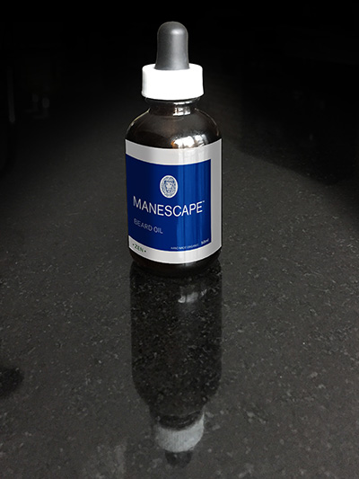

This is a new product that I have been working on. I developed this product for my own beard to keep it soft and shiny and to condition the skin under my beard—there is nothing worse than an itchy beard…right?. The product is hand made and mixed, all oils and essential oils are 100% organic (no synthetics) and safe for use every day. The product leaves no oily residue and is better for your skin than anything I've tried.
The product comes in 3 fragrances: Forest, Zen and Naked.

All Manescape™ Beard Oils are a mixture of Jojoba, Sweet almond & Argon oil. Then essential oils complete the scent and the experience leaving you with a soft, shiny and wonderfully scented beard. Unless of course you prefer the naked truth unscented
Which ever oil you choose, your skin and beard will thank you.